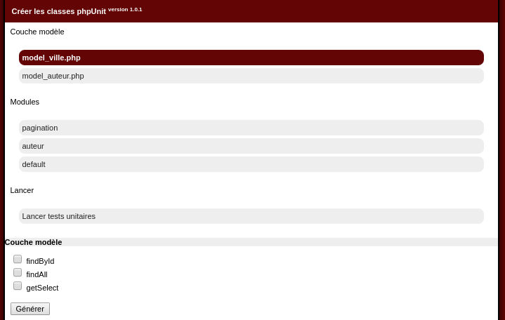
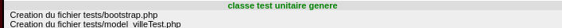

Test unitaires: Génération de couche modèle
Retour au menuBuilder
Dans la première partie, vous avez la liste de vos classes modèles, en cliquant sur l'une d'entre elle:
Vous avez une liste des méthodes de celle-ci. Ce formulaire permet de générer une classe de test plus facilement.
Dans le cas des couches modèles, on peut/doit juste tester les méthodes qui induisent un retraitement/algo de retraitement.
En effet il n'est utile de tester sur chaque classe que l'algo de notre fait. Ici il est donc simplement utile de tester la méthode getSelect()
Car dans les autres méthodes: findAll et findById on net fait ici que retourner le retour d'un findMany / findOne
Cochons donc getSelect pour voir le résultat.
Un fichier tests/model_villeTest.php est généré

Présentation de la classe modèle
Celui-ci permettra donc de tester notre classe modèle model_ville.Elle contient notamment une méthode testGetSelect, qui testera donc la méthode getSelect()
Le principe des tests unitaires suit les 3 A: Arrange Act Assert: On prépare le contexte, On fait l'action puis on verifie le resultat.
Ici dans notre methode getSelect: on fait une requete en base retournant des resultats qui sont indexés par id:
Pour rappel: la méthode qui va etre testée:
public function findAll(){
return $this->findMany('SELECT * FROM '.$this->sTable);
}
public function getSelect(){
$tab=$this->findAll();
$tSelect=array();
if($tab){
foreach($tab as $oRow){
$tSelect[ $oRow->id ]=$oRow->nom;
}
}
return $tSelect;
}
La classe de test
Dans nos classes de test on peut forcer le retour des méthodes findMany/findOne.. en forçant un retour.Cela nous permet de simuler un retour de notre requete pour pouvoir prévoir/verifier le retour
Le générateur du builder nous produit un test de base:
public function testGetSelect(){
// Arrange
$tData=array(
new row_ville(array(
//
)),
new row_ville(array(
//
)),
);
model_ville::getInstance()->setReturn($tData);
//act
$tReturn=model_ville::getInstance()->getSelect();
//Assert
$tAssert=array(
new row_ville(array(
//
)),
new row_ville(array(
//
)),
);
$this->assertEquals($tAssert,$tReturn);
}
Nous allons modifier pour adapter à nos besoins
public function testGetSelect(){
// Arrange
$tData=array(
new row_ville(array(
'id' => 1234,
'nom' => 'Ville 1234',
)),
new row_ville(array(
'id' => 4321,
'nom' => 'Ville 4321',
)),
);
model_ville::getInstance()->setReturn($tData);
//act
$tReturn=model_ville::getInstance()->getSelect();
//Assert
$tAssert=array(
1234 => 'Ville 1234',
4321 => 'Ville 4321',
);
$this->assertEquals($tAssert,$tReturn);
}
Détaillons un peu:
//Arrange
On définit que lors de l'appel à la méthode findMany le testUnitaire retournera le tableau suivant.
Contenant deux villes: Ville 1234 et 4321, puis on le définit comme retour avec setReturn() de la classe model_ville
//act
On appelle la méthode getSelect, récupère le retour
//Assert
Et l'on vérifie que le retour est bien conforme à l'attendu (ici une simple indexation par id)